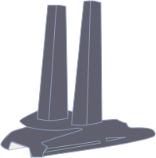

Race for water, c'est quoi ?
Créée en 2010 par Marco Simeoni, passionné par la mer, la Fondation Race for Water est une organisation dédiée à la préservation des océans.
Connue pour ses Odyssées mondiales à bord de navires révolutionnaires au service des océans, la Fondation étudie, depuis plus de 10 ans, l'impact de la pollution plastique sur les écosystèmes et la santé humaine, tout en apportant aux communautés locales des solutions pertinentes afin d'empêcher les déchets plastiques d'atteindre les cours d'eau.
"L’océan stabilise le climat, absorbe le carbone, et atténue les effets du changement climatique, préservant l’équilibre planétaire."
Dès 2024, la Fondation Race for Water reprendra ses opérations à bord d’un nouveau catamaran révolutionnaire «zéro émission de CO2», le MODX 70. Déployée sur de multiples missions, cette prochaine Odyssée engagera la Fondation sur une nouvelle thématique : les océans et le changement climatique. À travers son programme « Learn, Share, Act », elle démontrera l’importance de décarboner le monde maritime et de préserver un océan sain et vivant.
